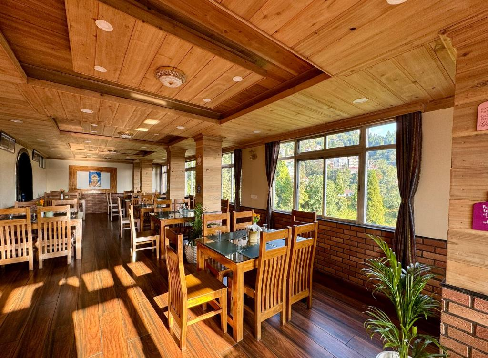
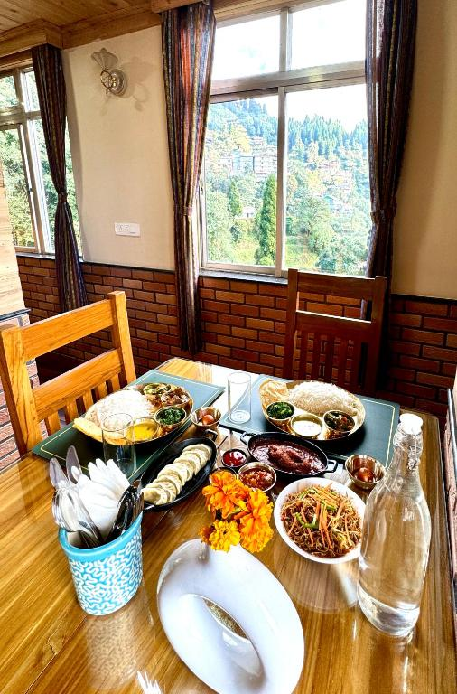
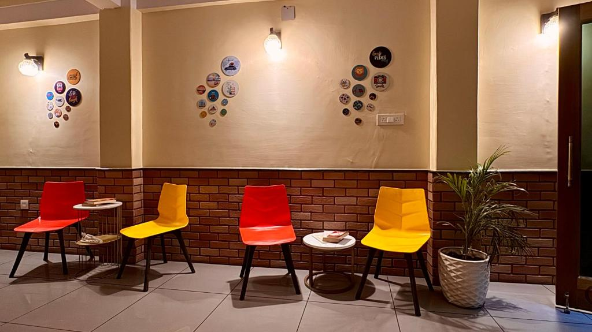
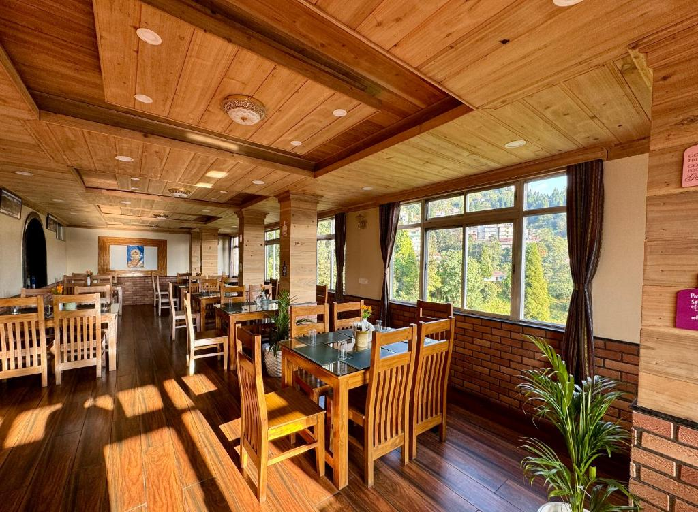
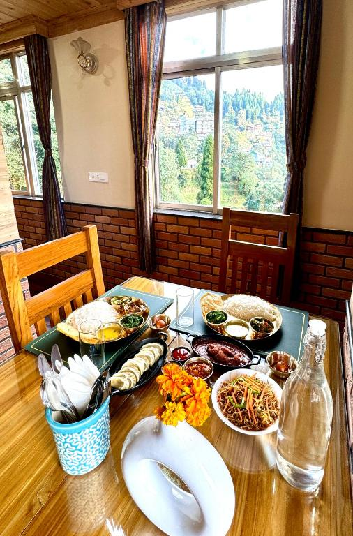
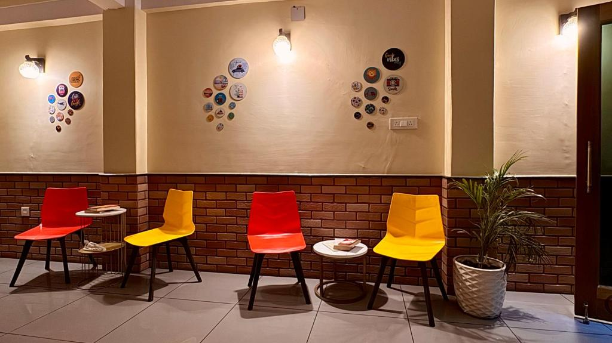
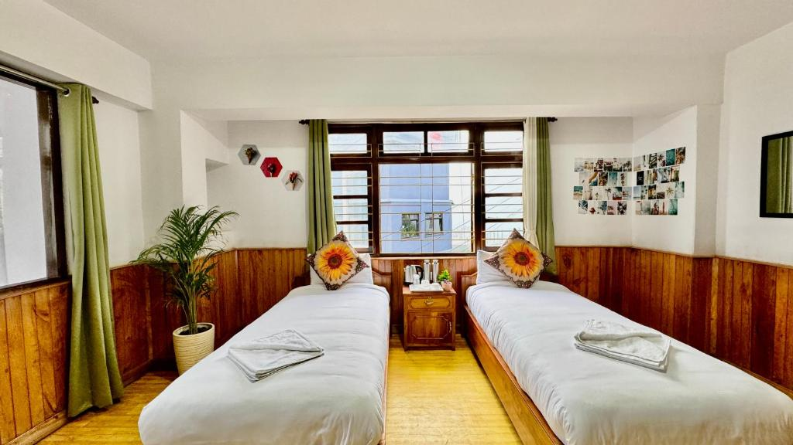
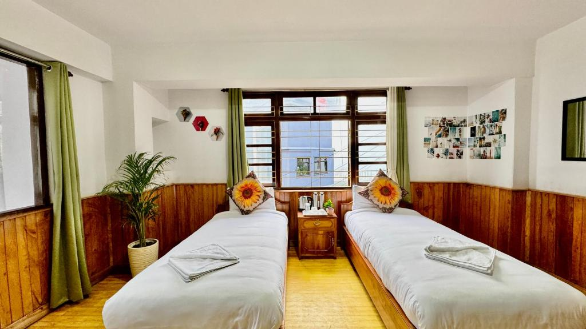

 

Set in Darjeeling, within 6.6 km of Tiger Hill and less than 1 km of Ghoom Monastery, Batasia, Hillside Inn offers accommodation with a terrace and free WiFi throughout the property as well as free private parking for guests who drive. This 3-star hotel offers room service and an ATM. The accommodation features evening entertainment and free shuttle service.
At the hotel, all rooms are fitted with a wardrobe, a flat-screen TV, a private bathroom, bed linen and towels. Batasia, Hillside Inn provides some units that feature a balcony, and the rooms have a kettle.
Breakfast is available every morning, and includes à la carte, Asian and vegetarian options. At the accommodation you will find a restaurant serving Chinese, Indian and Nepalese cuisine. Vegetarian, dairy-free and gluten-free options can also be requested.
Tibetan Buddhist Monastery Darjeeling is 2 km from Batasia, Hillside Inn, while Himalayan Mountaineering Institute And Zoological Park is 5 km from the property. The nearest airport is Bagdogra International Airport, 62 km from the hotel.